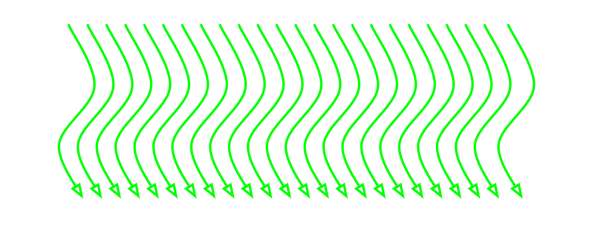
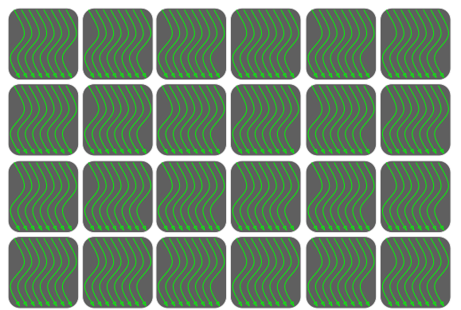
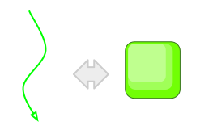
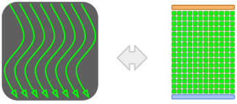
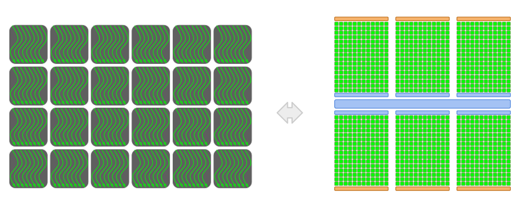
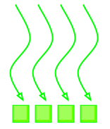
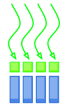
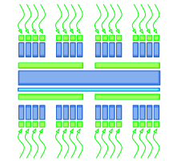

Code GPU with CUDA
Common optimizations
Created by Marina Kolpakova (cuda.geek) for Itseezprevious
Outline
Out of scope
- CUDA API
- Dynamic parallelism (sm_35)
- Surfaces and layered textures
- OpenGL interoperability
CUDA introduction
Used terminology
- Device - CUDA capable NVIDIA GPU.
- Device code - code, executed on the device.
- Host - x86/x64/arm CPU.
- Host code - code, executed on the host.
C.U.D.A.
C.U.D.A. is a Compute Unified Device Arhitecture.
- Capable Hardware
- Device ISA
- Compiler, GPU assembler
- NVIDIA driver
- C++ based H.L. language, CUDA Runtime
CUDA defines programming, execution and memory models
Programming model
Work for GPU threads represented as kernel (function that is marked with __global__ keyword)
__global__ void kernel()
{
//
}- kernel is an entry point into device code
- kernel represents a task for single thread (scalar notation)
- Every thread in a particular grid executes the same kernel function
- Threads use theirs threadIdx and blockIdx to dispatch work for it.
Kernel is executed by many threads
Threads are grouped in blocks
Each thread has a thread ID
Thread blocks form an execution grid
Each block has a block ID
Execution (HW mapping) model
Single thread is executed on core
Each block is executed by one SM and does not migrate. Number of concurrent blocks that can reside on SM depends on available resources. Warps from thread block can be in one of the following states: Executed, Ready, Wait, Resident
- Threads in a block can cooperate via shared memory and synchronization.
- It's impossible to cooperate between threads from different blocks.
One or multiple (sm_20+) kernels are executed on device.
Memory model
Thread has its own registers
Thread has its own local memory (like stack)
Block has shared memory.
Pointer to shared memory is valid while block is resident.
__shared__ float buffer[CTA_SIZE];
Grid able to access global and constant memory
Basic CUDA kernel
__global__ void kernel(float *in, float *out)
{
int tid = blockIdx.x * blockDim.x + threadIdx.x;
out[tid] = in[tid];
}- retrieve position in grid (widely named tid)
- load data
- compute
- write back the result
CUDA usage flow
void execute_kernel(const* float host_in, float* host_out, int size)
{
float* device_in, * device_out;
// allocate memory
cudaMemcpy(device_in, host_in, cudaMemcpyHostToDevice);
dim3 block(256);
dim3 grid(size / 256);
kernel<<<grid, block>>>(device_in, device_out);
cudaThreadSynchronize();
cudaMemcpy(host_out, device_out, cudaMemcpyDeviceToHost);
}- Upload data to GPU memory
- Configure kernel launch
- Execute kernel
- Wait till completion
- Download results to CPU memory
Device code
optimization
How Identify performance limiters
-
Time
- Subsample when measure performance.
- Determine your code wall time. You'll optimize it.
-
Profile
- Collect metrics and events.
- Determine bounding factors (e.c. memory, divergence).
-
Prototype
- Prototype kernel parts separately and time them.
- Determine memory access or math patterns.
-
(Micro)benchmark
- Determine hardware characteristics.
- Tune for particular architecture, GPU class.
- Look into SASS
Factors that bound performance
Optimize for GPU
SIMT architecture makes GPU to be latent at all:
- gmem (~350)
- caches (L1: ~56 , L2: ~160)
- registers (~10 cycles for FADD)
Hiding latency is the only GPU specific optimization principle.
Factors that pervert latency hiding:
- Insufficient parallelism
- Inefficient memory accesses
- Inefficient control flow
Little's law
- Throughput is how many operations are performed in one cycle.
- Latency is how many cycles pipeline stalls before other depended operation.
L = λ W
Warps on fly (L) = Throughput (
) x Latency (W) λ
 Example: GPU with 8 operations per clock and 18 clock latency
Example: GPU with 8 operations per clock and 18 clock latency
Little's law - FFMA example
- Fermi GF100
- throughput: 32 operations per clock (1 warp)
- latency: ~18 clocks
- max resident warps per SM: 24
- inventory: 1 * 18 = 18 warps on fly i.e. ready to execute.
- Kepler GK110
- throughput: 128 (if no ILP) operations per clock (4 warps)
- latency: ~10 clocks
- max resident warps per SM: 64
- inventory: 4 * 10 = 40 warps on fly i.e. ready to execute.
Concurrent warp execution
TLP & ILP
- Thread Level Parallelism
- run more warps per SM
- bounding factors:
- bad launch configuration
- resource consuming kernels
- not well parallelized code
- Instruction Level Parallelism
- instruction dual issue
- bounding factors - pipeline hazards
- structural hazards
- data hazards
Improve TLP
- Occupancy is actual number of warps running concurrently on a multiprocessor divided by maximum number of warps that can be run concurrently by hardware.
- Kepler can keep up to 64 resident warps belonging to 16 blocks BUT you need recourses for them: registers, smem.
- Kepler has 64K x 32-bit registers or
65536registers / 64 warps / 32 warp_size = 32 32bit-registers/thread.
Improve occupancy to achieve better TLP
Configuration selection
Block configuration itself can affect occupancy.
- Number of threads per threadblock
- Number of threadblocks
- Amount of work per threadblock
Improve ILP
- Kernel unrolling: process more elements by thread
__global__ void unrolled(const float* in, float* out ) { const int tid = blockDim.x * blockIdx.x + threadIdx.x; const int totalThrads = blockDim.x * gridDim.x; const float tmp1 = f(in[tid]); const float tmp2 = f(in[tid +totalThrads]); out[tid] = tmp1; out[tid + totalThrads] = tmp2; } - Loop unrolling in device code(#pragma unroll CONST_EXPR): improve number of independent operations.
#pragma unroll 2 for( int i = 0; i < N_ITERATIONS; i++ ) - Techniques used for increasing ILP on CPU are suitable
for modern GPUs ILP required
sm_21+ can not achieve peak utilization without ILP.
- Kepler: 4 warp schedulers, dual-issue each. 192 compute cores process up to 6 warps each clock. If there is no ILP only 128 of 192 cores are used. Compute cores utilization: 0.6(6)
- Fermi (sm_21): 2 warp schedulers, dual-issue each. 48 compute cores process 3 warps each 2 clock. If there is no ILP only 32 of 48 cores are used. Compute cores utilization: 0.6(6)
Memory
Optimization
Memory Types
| Memory | Scope | Location | Cached | Access | Lifetime |
|---|---|---|---|---|---|
| Register | Thread | On-chip | N/A | R/W | Thread |
| Local | Thread | Off-chip | L1/L2 | R/W | Thread |
| Shared | Block | On-chip | N/A | R/W | Block |
| Global | Grid + Host | Off-chip | L2 | R/W | App |
| Constant | Grid + Host | Off-chip | L1,L2,L3 | R | App |
| Texture | Grid + Host | Off-chip | L1,L2 | R | App |
Memory types (Cont.)


GPU caches
GPU caches are not intended for the same use as CPU caches- Not aimed at temporal reuse. Smaller then CPU size (especially per thread, e.c. Fermi: 48 Kb L1, 1536 threads on fly, cache/thread = 1 x 128-byte line).
- Aimed at spatial reuse, intended to smooth some access patterns, help with spilled registers and stack.
- Do not tile relying on block size, lines likely become evicted next few access
- If it is possible to tile use smem. Same latency, fully programmable
- L2 aimed to speed up atomics and gmem writes.
GMEM
Learn your access pattern before thinking about latency hiding and try try not to thresh the memory bus.
Four general categories of inefficient memory access patterns:
- Miss-aligned (offset) warp addresses
- Strided access between threads within a warp
- Thread-affine (each thread in a warp accesses a large contiguous region)
- Irregular (scattered) addresses
Always be aware about bytes you actually need and bytes you transfer through the bus
GMEM - Miss-aligned

- Add extra padding for data to force alignment
- Use read-only texture L1
- Combination of above
GMEM - Strided

- If pattern is regular, try to change data layout: AoS -> SoA

- Use smem to correct access pattern.
- load gmem -> smem with best coalescing
- synchronize
- use
- Use warp shuffle to permute elements for warp
- load needed by warp elements coalesced
- permute
- use

- Use proper caching strategy
- cg - cache global.
- ldg - cache in texture L1.
- cs - cache streaming.
GMEM - Thread-affine
Each thread accesses relatively long contiguous memory region

- Load big structures using AoS
- Thread loads contiguous region of data
- All threads load the same data
Work assignment
int tid = blockIdx.x * blockDim.x + threadIdx.x; int threadN = N / blockDim.x * gridDim.x;
for (size_t i = tid * N; i < (tid + 1) * N; ++i )
{
sum =+ in[i]
} for (size_t i = tid; i < N; i += blockDim.x * gridDim.x )
{
sum =+ in[i]
}Uniform load
All threads in a block access the same address as read only.
Memory operation uses constant 3-levels of memory caches
- Generated by compiler
- Available as PTX asm insertion
__device__ __forceinline__ float __ldu(const float* ptr)
{
float val;
asm ("ldu.global.f32 %0, [%1];" : "="f(val) : l(ptr));
return val;
}GMEM - Irregular
Random memory access. Threads in a warp access many lines, strides are irregular.
- Improve data locality
- Try 2D-local arrays (Morton-ordered)
- Use read-only texture L1
- Kernel fission to localize the worst case.
Texture
- Smaller transactions and different caching (dedicated L1, 48Kb, ~104 clock latency)
- Cache is not polluted by other GMEM loads, separate partition for each warp scheduler helps to prevent cache threshing
- Possible hardware interpolation (Note: 9-bit alpha)
- Hardware handling of out-of-bound access
Kepler improvements:
- sm_30+ Bindless textures. No global static variables. Can be used in threaded code
- sm_32+ GMEM access through texture cache bypassing interpolation units.
SMEM - Banking
Kepler - 32-bit and 64-bit modes

special case -2D smem usage (Fermi example)
__shared__ float smem_buffer [32][32 + 1] SMEM
The common advices are:
- use smem to improve memory access pattern
- use smem for stencil processing
But the gap: smem v.s. math throughput has increased
- Tesla: 16(32bit) banks vs 8 thread processors (2:1)
- GF100: 32(32bit) banks vs 32 thread processors (1:1)
- GF104: 32(32bit) banks vs 48 thread processors (2:3)
- Kepler: 32(64bit) banks vs 192 thread processors (1:3)
Max size 48Kb (49152b), assume max occupancy 64x32,
so 24 bytes per thread.
More intensive memory usage affects occupancy.
SMEM (Cont.)
smem + L1 use the same 64KB. Program-configurable split:
- Fermi: 48:16, 16:48
- Kepler: 48:16, 16:48, 32:32
cudaDeviceSetCacheConfig(), cudaFuncSetCacheConfig()
- prefer L1 to improve lmem usage
- prefer smem for stencil kernels
smen often used for:
- data sharing across the block
- inter-block communication
- bock level buffers (for scan or reduction)
- for stencil code
LMEM
Local memory is a stack memory analogy: call stack, register spilling. Note: Both Local memory reads/writes are cached in L1.
- Registers are for automatic variables
int a = 42; - Volatile keyword enforce spilling
- Registers do not support indexing: local memory is used for local arrays
int b[ SIZE ] = {0,}; - Register spilling so more instructions and memory traffic
spilling control
- Use __launch_bounds__ to help compiler to select maximum amount of registers.
__global__ void __launch_bounds__( maxThreadsPerBlock, minBlocksPerMultiprocessor) kernel(...) { //... } - Compile with -maxrregcount to enforce compiler optimization for register usage and register spilling if needed
- By default you run less concurrent warps per SM.
Control flow
Control flow
Problems
- Warp divergence: branching, early loop exit... Inspect SASS to find divergent pieces of code.
- Work amount is data dependent: decide code-patch depending on input (like classification task)
- To many synchronization logic: intensive usage of parallel data structures, need lots of atomics, __sychthreads(), e.t.c.
- Resident warps: occupy resources but do nothing.
- Big blocks: tail effect.
Solutions
- Understand your problem. Select best algorithm keeping in mind GPU architecture. Maximize independent parallelism
- Compiler generates branch predication with -O3 during if/switch optimization but number of instructions has to be less or equal than a given threshold. Threshold = 7 if lots of divergent warps, 4 otherwise.
- Adjust thread block size.
- Try work queues
Kernel Fusion and Fission
- Fusion
- Replace chain of kernel calls with fused one
- Helps to save memory reads/writes. Intermediate results can be kept in registers
- Enables further ILP optimizations
- Kernels should have almost the same access pattern
- Fission
- Replace one kernel call with sequence
- Helps to localize ineffective memory access patterns
- Insert small kernel that repacks memory (e.c. integral image)
it is always advised
- Basic CUDA Code Optimizations
- use compiler flags
- do not trick compiler
- use structure of arrays
- improve memory layout
- load by cache line
- process by row
- cache data in registers
- re-compute instead of re-load values
- keep data on GPU
- Conventional parallelization optimizations
- use light-weight locking,
- ... atomics,
- ... and lock-free code.
- minimize locking,
- ... memory fences,
- ... and volatile accesses.
- Conventional architectural optimizations
- utilize shared memory,
- ... constant memory,
- ... streams,
- ... thread voting,
- ... and rsqrtf;
- detect compute capability and number of SMs;
- tune thread count,
- ... blocks per SM,
- ... launch bounds,
- and L1 cache/shared-memory configuration